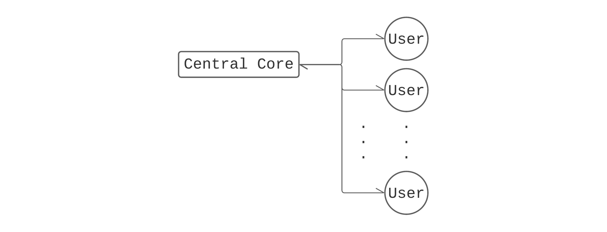
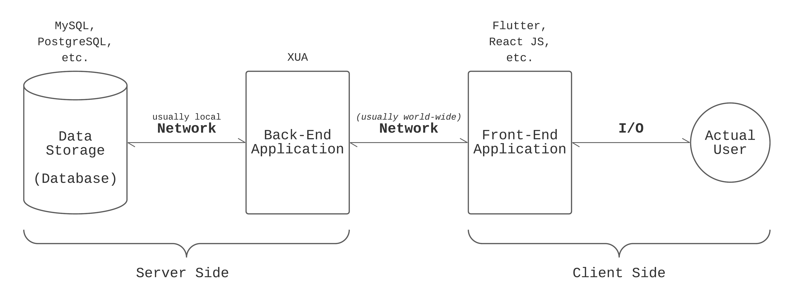
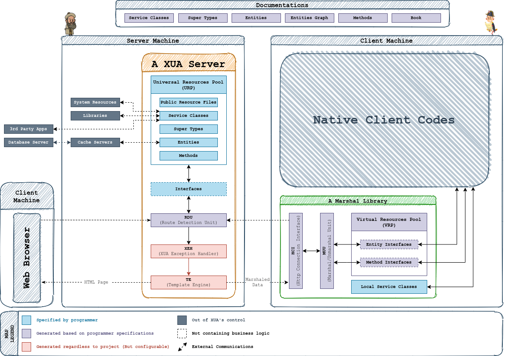

Preface; An Introduction To Xua
Xua is shortened form of Xuarizmi, named after al-Khwarizmi (Persian: خوارزمی), a Persian mathematician, astronomer, geographer, founder of algebra (The term algebra itself comes from the title of his book "al-jabr" meaning completion or rejoining), and head of the library of the House of Wisdom in Baghdad. His name was formerly Latinized as Algoritmi (and yes, that's where the word algorithm comes from).
Xua is a Code Generator Tool, mainly applicable for creating Web-Services and, in some cases, for creating complete Web-Sites (including back-end and front-end). Xua aims to generate all trivial and technical codes for us, so we only write codes that require human intelligence. In other words, the only thing that Xua does not do is its name. We need to give it algorithms, and Xua does the rest by itself.
Xua generates server codes in PHP language. While a full and complete PHP Project can be generated by Xua, it is not possible to get a complete front-end project; instead, Xua can generate a front-end library (Marshal Library) that can make the connection between client and Xua server faster, more secure, more reliable, and easier to implement.
Generally, most multi-user applications (such as social networks, messengers, online games, websites) have the following architecture (except for those which are peer-to-peer or using chains and other similar concepts).

This architecture is called client-server. The shared data is stored in a central core (usually called the server), and users (usually called clients) can read, modify, and delete specific data based on their permissions. From Xua's perspective, we can think of the connection between the data storage and each user as a series of interfaces, each one communicating with the next and previous interfaces on a specific platform.

According to this principle, both back-end and front-end applications are nothing more than interfaces between the actual user and the data storage.
The Triplet of Xua is three blocks: Method, Entity, and Super.The Method blocks are the ones that handle communication with the front-end application, and the Entity blocks are the ones that handle communication with the Database. Super blocks (actually Super-Type blocks) are one level lower than Method and Entity blocks; Supers are not explicitly used in communications but instead are used in defining Methods and Entities and are a fundamental part of Xua as they do all of the type-checkings, validation, and marshaling and unmarshaling the data.
There is also a fourth block called Interface, which is in the frontline of the back-end application. There is a specific interface called URPI (Universal Resource Pool Interface) responsible for connecting its requests to Methods, but the programmer can define other interfaces as well and fill them with pure PHP codes. There is also a file called
routes.xrml (xrml stands for Xua's routes minimal language) which defines that what Interface should be called based on the request method (such as POST, GET, OPTIONS) and the request URI, which are HTTP protocol concepts (which is the protocol Xua and front-end communicate with).Xua advocates the single block policy. A
.xua file can contain one block at most, and the block can be Method, Entity, Super, or Interface. However, having more than one block in a file is permitted only for documentation purposes, and it should not affect the server project. So there are only four types of .xua files. One can also inject native scripts under the name of Services and assets and other files (under the name of Resource Files) into the project.So a Xua project is a combination of specifications (Methods, Entities, Supers, Interfaces, Services, and Resource Files to be specific) that will result in generating a server project (known as Xua Server), a front-end library (known as Marshal Library), and a complete set of documentations (known as Documentations).
The detailed Xua architecture is a little frustrating compared to the simplified version we have just provided, but we only mention it here. There is no need to master it entirely for now.

The blue units are the ones mentioned above, and the programmer needs to specify them directly. The RDU is generated based on the file
routes.xrml, and MUU is generated based on Super blocks. So a Xua project is simply a set of files specifying this stuff. All these lead us to the following structure of a Xua project.Xua Project Root
├─ Methods
│ └─ (.xua files)
├─ Entities
│ └─ (.xua files)
├─ Supers
│ └─ (.xua files)
├─ Interfaces
│ └─ (.xua files including HomeInterface.xua, TestInterface.xua,
│ and UniversalResourcePoolInterface.xua)
├─ Services
│ ├─ Server
│ │ ├─ PHP
│ │ └─ └─ (.php files)
│ ├─ Marshal
│ │ ├─ JavaScript
│ │ └─ └─ (.js files)
│ └─ (...)
├─ (Resource Files ...)
├─ routes.xrml
└─ config.xml
But this is the default structure; the programmer can change it by modifying
config.xml.In this documentation, we try to cover all of these units. By visiting the page Architecture and clicking on a unit, you will be redirected to the documentation section of that unit. Note that the Units documentation mainly contains information about why a unit exists and what it does in a more theoretical way. For details on how (instead of why) to create a Xua block (syntax), read the corresponding chapter.
System Requirements
Currently, Xua is only available on Linux.-
python3 along with pip are required to install xua package.- The PHP Engine and a PHP Server is recommended for test and debug on the local server.
- MySQL Server is recommended for test and debug on the local server.
- DataGrip is recommended for monitoring data to test and debug.
- Visual Studio Code is recommended with Xua extension installed to code in Xua language. Although it is unnecessary, the extension will help with code correction and autocomplete and make the build processes easier.
Installing the VSCode Xua extension will automatically install requirements and the Xua CLI tool. Still, if you're not willing to use VSCode, you can install
xua using pip from that.- Install
pipsudo apt install python3-pip
- Add
pip packages directory to PATHif [[ ":$PATH:" != *":/home/ubuntu/.local/bin:"* ]]; then PATH="/home/ubuntu/.local/bin${PATH:+":$PATH"}"; fi
- Install
xuapip install -e git+https://github.com/kmirzavaziri/xua-cli/#egg=xua
You can check the
xua is installed correctly by running the commandxua --version
it should output something like this
Xua: A PHP Code Generator
██╗░░██╗██╗░░░██╗░█████╗░
╚██╗██╔╝██║░░░██║██╔══██╗
░╚███╔╝░██║░░░██║███████║
░██╔██╗░██║░░░██║██╔══██║
██╔╝╚██╗╚██████╔╝██║░░██║
╚═╝░░╚═╝░╚═════╝░╚═╝░░╚═╝
1.0-β
Hello World!
To create a new project, go to a directory you want to create the project and runxua new project PROJECT_NAME
Now go to the project directory and build the template project you just created by running
cd PROJECT_NAME
xua build server/ph
or alternatively, click on the build button that appears in VSCode after installing the plugin.
Set up a PHP server on the build destination location (
build/php/ by default)cd build/php
php -S localhost:8000 main.php
or alternatively, click on the run server button that appears in VSCode after installing the plugin.
Now, you should be able to see the Hello World! page by visiting the localhost:8000 page on
your browser.
Introduction